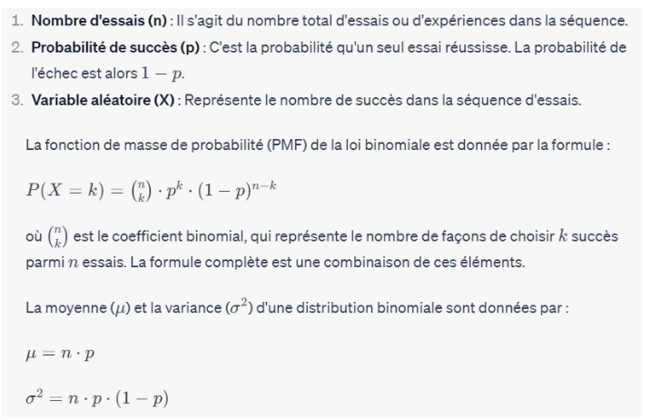
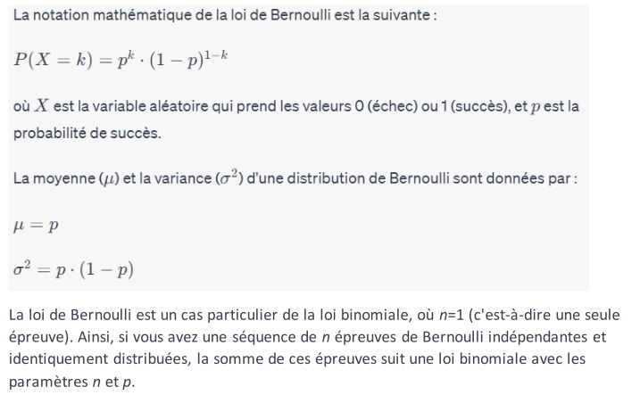
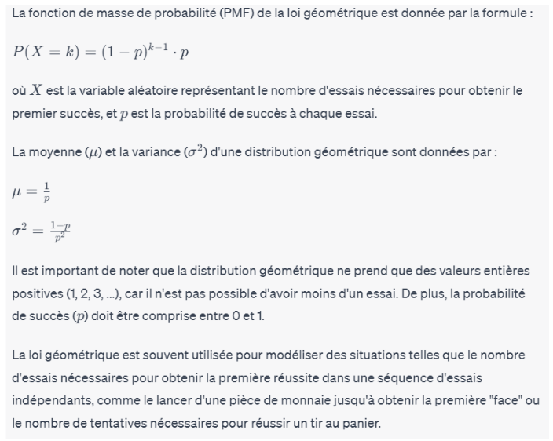
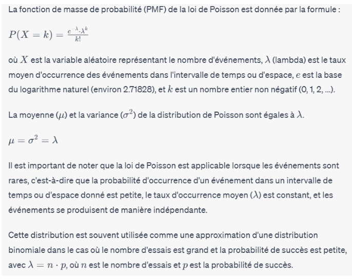
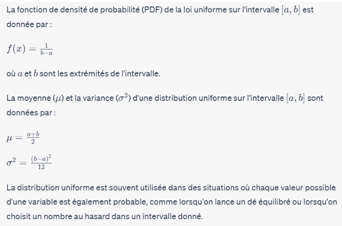

Stats pour l'Informatique
Cette page présente les principales lois de probabilité discrètes et continues utilisées en statistique.
Loi binomiale
La loi binomiale est une distribution de probabilité discrète qui modélise le nombre de succès dans une séquence fixe d'essais indépendants, chacun ayant une probabilité de succès constante. Les caractéristiques clés de la loi binomiale sont les suivantes :
La loi binomiale est souvent utilisée pour modéliser des situations où deux résultats sont possibles à chaque essai, comme réussite/échec, vrai/faux, etc. Par exemple, le lancer d'une pièce de monnaie (tête/pile) peut être modélisé par une loi binomiale.
Il est important de noter que pour qu'une distribution suive la loi binomiale, les essais doivent être indépendants (le résultat d'un essai n'affecte pas les résultats des autres essais) et la probabilité de succès doit être constante pour chaque essai.
Loi de Bernouilli
La loi de Bernoulli est une distribution de probabilité discrète qui modélise une seule épreuve aléatoire avec deux résultats possibles : succès (généralement noté 1) ou échec (généralement noté 0). Elle est souvent utilisée pour représenter des expériences binaires où il y a seulement deux résultats possibles.
La loi de Bernoulli est un cas particulier de la loi binomiale, où n=1 (c'est-à-dire une seule épreuve). Ainsi, si vous avez une séquence de n épreuves de Bernoulli indépendantes et identiquement distribuées, la somme de ces épreuves suit une loi binomiale avec les paramètres n et p.
La loi de Bernoulli est souvent utilisée pour modéliser des situations où il y a deux résultats possibles, comme le succès ou l'échec d'un test, la présence ou l'absence d'un événement, etc.
Loi géometrique
La loi géométrique est une distribution de probabilité discrète qui modélise le nombre d'essais nécessaires avant d'obtenir le premier succès dans une séquence d'essais indépendants, chacun ayant une probabilité de succès constante. Elle est utilisée pour modéliser des situations où l'on s'intéresse au nombre d'essais nécessaires pour obtenir un succès pour la première fois.
Loi de Poisson
La loi de Poisson est une distribution de probabilité discrète qui modélise le nombre d'événements rares se produisant dans un intervalle de temps ou d'espace fixe. Elle est souvent utilisée dans des domaines tels que la statistique, la biologie, la physique, et l'ingénierie pour modéliser des phénomènes tels que le nombre d'appels dans un centre d'appels en une heure donnée, le nombre de collisions de particules par unité de temps, etc.
Loi uniforme
La loi uniforme est une distribution de probabilité continue dans laquelle toutes les valeurs possibles ont une probabilité égale d'occurrence. Cela signifie que chaque point de l'intervalle de la distribution a la même probabilité d'être atteint. La distr ibution uniforme est souvent représentée graphiquement par une fonction constante sur l'intervalle.
